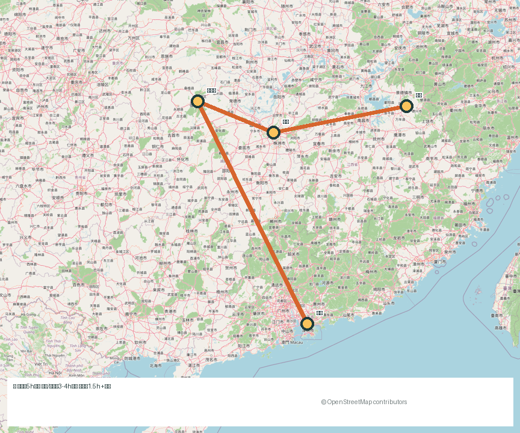

DAY01深圳 → 张家界
高铁进山，傍晚先吃一顿三下锅

下午抵达，休整 + 明日进山预告
住市区（天门山索道下站附近）或直接住武陵源，二选一：想第二天赶早就住武陵源，想吃得好就住市区。傍晚去南门口美食街，三下锅、土家腊肉、合渣按小份点。
三下锅 · 腊肉 · 合渣一个人的公共交通旅程：先扎进张家界的石峰云雾里，回程顺路在长沙吃一夜烟火，再从南昌方向回到乐平。
真实地图底图：橙线是本次行程顺序，实际车次与换乘以 12306 为准。

你点名想去张家界，那就不凑别的"顺路城市"了。前半程把武陵源的石英砂岩峰林一次看够：袁家界的悬浮山、天子山的云海、金鞭溪的峡谷步道；后半程回程在长沙停留一夜，太平街的夜宵和一杯茶颜悦色，把山里的清冷用一个热闹的城市收尾，再回乐平。
景区索道、百龙天梯、环保车都是单人友好，不用凑人；长沙部分全是步行+地铁。这条线以山为主，不安排游泳，也不安排游湖、拼船类项目。
住市区（天门山索道下站附近）或直接住武陵源，二选一：想第二天赶早就住武陵源，想吃得好就住市区。傍晚去南门口美食街，三下锅、土家腊肉、合渣按小份点。
三下锅 · 腊肉 · 合渣
袁家界是《阿凡达》哈利路亚山的原型观景台，迷魂台、天下第一桥都在这一线；天子山看峰林全景，运气好有云海。人多就走得慢一点，单人反而灵活。
阿凡达原型 · 峰林 · 云海
索道直达山顶，走玻璃栈道（恐高可以走旁边普通道）、鬼谷栈道；下山到天门洞爬 999 级上天梯。注意天门山票分 A/B/C 线和时段，务必按预约时段到。
玻璃栈道 · 天门洞 · 999 级天梯
地铁 2 号线直达橘子洲，走到青年毛泽东雕像看湘江两岸；如果更想看文物，改去湖南省博物馆看马王堆（需提前预约，周一闭馆）。中午吃火宫殿或文和友小份拼桌。
橘子洲 · 马王堆（二选一）· 火宫殿
压缩方案：Day 1 住武陵源；Day 2 只走袁家界 + 金鞭溪精华线（放弃天子山）；Day 3 上午天门山，中午下山直接张家界西 → 长沙南 → 南昌 → 乐平，夜车到家。放弃长沙夜宵和橘子洲——山和城市只能选一头。
取舍：砍城市不砍山